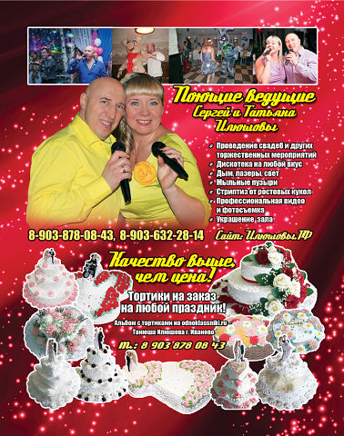
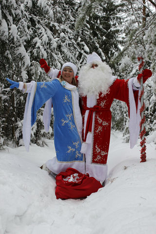

Добрый день, уважаемый Гость!
Ищете тамаду на свадьбу, ведущего на праздник или юбилей? Хотите провести корпоратив?
Представляем вам семейную пару Илюшовых… Поющего ведущего Сергея и Красноречивую Татьяну – организаторов, ведущих вашего праздника!
Мы рады предложить Вам свои услуги по проведению Вашего мероприятия и стать Вашими Ведущими на празднике. Этот сайт максимально отражает наше творчество и профессиональную деятельность, на его страницах Вы можете ознакомиться с фото и видео материалами, и самое главное, составить свое мнение о нашем подходе к работе.
• Профессионально подготовят сценарий с учетом индивидуальных пожеланий участников торжества, опираясь на знание народных традиций и свой богатый опыт.
• Веселые и остроумные Принципиальные сторонники тактичного юмора, не обидят человека грубой шуткой, находчиво сгладят двусмысленную ситуацию. Умеют работать с любой аудиторией от малышей до людей старшего поколения, в тесном семейном кругу и на корпоративном приеме крупной фирмы.
• Музыкальны, имеют приятный громкий голос, красивый тембр, четкую дикцию.Приятно удивят вас живым вокалом.
• Работают со своей аппаратурой,в их арсенале все атрибуты для музыкального и лазерного шоу для дискотеки всех направлений и возрастов в сопровождении дыма, мыльных пузырей,снега,а так же костюмированного шоу,с участием ваших гостей.
• Кто любит по горячее, для вас в программе может быть стриптиз ростовых кукол, как для мужчин, так и для женщин.
• В Новогодние праздники, торжество всегда посещает Дед Мороз и Снегурочка(как на корпоративе,так и у вас дома)


Мы раздаем мгновенья счастья
Не секрет, что каждому нужно свое счастье. То, что подходит одному человеку, может быть совершенно не нужно другому. Тот, кто понимает это, старается никогда не использовать стандартные сценарии свадьбы, юбилея или другого праздника.
Ведущие праздника
Ведущие праздника должны не тащить за руку в круг, не заставлять придумать оригинальный тост, а вовлечь в атмосферу праздника естественным путем. Мы называем это – заразить добрым веселым настроем. Это самое трудное в нашей работе и требует предварительной кропотливой работы со сценарием и гостями праздника.Счастье – это самый дефицитный товар на нашей планете. Для того, чтобы гости праздника, который мы ведём почувствовали себя счастливыми, мы готовы трудиться.Хотите все увидеть своими глазами? Просто пригласите нас на свой праздник в качестве ведущих.Мы не гонимся за ценой, для нас главное качество!
Наши цены: от 12 000 р.